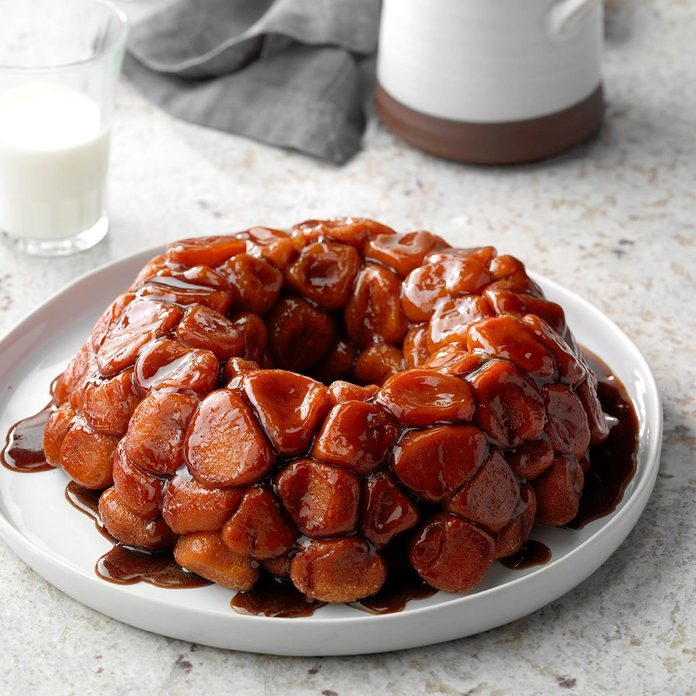

Cinnamon Monkey Bread
Total Time:
Prep: 20 min. Bake: 35 min.

" Is it possible for four kids to cook together without total chaos in the kitchen?
Yes, with the right recipe! This cinnamon roll monkey bread is a favorite with my bunch. They get to "play" as
they roll pieces of refrigerated biscuit dough into balls. —Lisa Lisa, Greenville, Ohio
Ingredients
- 4 tubes (7-1/2 ounces each) refrigerated buttermilk biscuits
- 1/2 cup sugar
- 2 teaspoons ground cinnamon
- 1/2 cup butter, melted
- 1/2 cup packed brown sugar
Steps
- Preheat oven to 350° Cut each biscuit into 4 pieces; shape into balls. Combine sugar and cinnamon. Roll each ball in cinnamon sugar. Arrange balls evenly in a generously greased 9- or 10-in. fluted tube pan. Sprinkle with remaining cinnamon sugar.
- Combine butter and brown sugar; pour over the top. Place tube pan on baking sheet; bake until dough is golden brown and cooked through, 35-45 minutes. Cool for 5 minutes before inverting bread onto a serving platter.
Nutrition Facts
1 piece: 133 calories, 6g fat (4g saturated fat), 15mg cholesterol, 174mg sodium, 19g carbohydrate (13g sugars, 0 fiber), 1g protein.